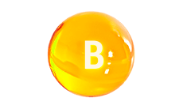
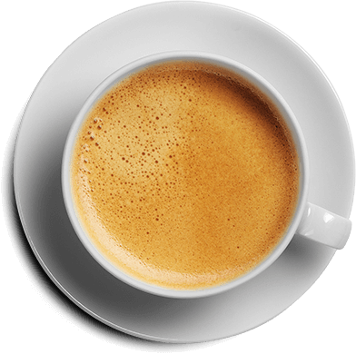
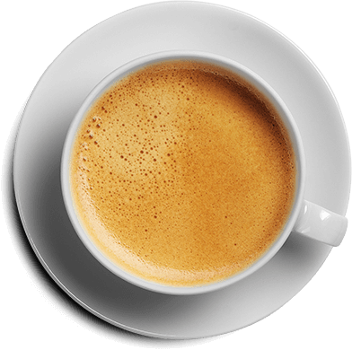

Hordeum Forte залог мужского здоровья
Одна капсула
Hordeum Forte
Сила проросшего
ячменя
Безотказная
сексуальная сила

Об оздоровительных свойствах ячменя известно ещё со времён древних римлян и египтян. В XVIII веке ни одна лечебная настойка не обходилась без измельчённого проросшего зерна ячменя. Знахари объясняли это тем, что это зерно благотворно влияет на мужской организм: насыщает, придаёт жизненных сил, восстанавливает гормональный баланс и лечит мочеполовые болезни.
Настоящие ингредиенты настоящие результаты

Экстракт проросших зёрен ячменя
снимает болевые симптомы в области паха и промежности, а также облегчает мочеиспускание всего за 3 часа

Биотин
устраняет воспаление простаты и восстанавливает уровень тестостерона
-
Витамин E
устраняет инфекционные и воспалительные процессы, восстанавливает защитные силы организма
- 
Витамин B
повышает количество эякулята и активность сперматозоидов
-
Клетчатка
адсорбирует и выводит из организма токсины и яды, которые подавляют иммунитет
Hordeum Forte — гарантированный результат без побочных эффектов!
Hordeum Forte заботится о мужском здоровье

Действие Hordeum Forte при хроническом простатите основано на нормализации кровотока в простате, уменьшении отёка и воспаления. С первых дней лечения простатита Hordeum Forte приводит к облегчению симптоматики.

Препарат действует прицельно и не имеет побочных действий. Доказано, что Hordeum Forte не оказывает негативного воздействия на репродуктивную и сексуальную функции, что немаловажно для любого современного мужчины.
Клинические исследования показали, что Hordeum Forte не только оказывает эффективное противоотёчное, противовоспалительное и обезболивающее действие, но также повышает эффективность действия антибиотиков и позитивно влияет на сперматогенез. Hordeum Forte быстро устраняет боль и при этом не имеет ограничений по применению в отличие от нестероидных противовоспалительных препаратов.
Длительный приём препарата не оказывает негативного влияния и не вызывает привыкания.
Курсовая терапия Hordeum Forte позволяет пациентам вести активный образ жизни.


 

Что говорят эксперты
Простатит — это серьёзно, лечить его нужно сразу. Вначале симптомы могут быть выражены у мужчин ещё неярко, но и недуг далеко не зашёл, можно повернуть заболевание вспять. Поэтому главное в лечении не пропустить начальную стадию, иначе последствия могут быть необратимыми:

Половая дисфункция и бесплодие

Аденома простаты

Онкологические опухоли
Чтобы избежать таких осложнений, я рекомендую клиентам Hordeum Forte. На собственной медицинской практике я убедился, что только этот комплекс оказывает существенное улучшение. Уже в первые часы приёма препарат снимает болевые симптомы и день за днём восстанавливает простату.
Состав Hordeum Forte позволяет использовать его и в профилактических целях. Препарат препятствует застойным явлениям и положительно влияет на кровоснабжение простаты и отток секрета из железы. Профилактический приём Hordeum Forte существенно снижает вероятность воспаления простаты.
С Hordeum Forte у вас обязательно получится!

Алексей Перфицкий
эксперт в области мужского здоровья
Hordeum Forte избавит от симптомов простатита быстрее аналогов
Часто задаваемые вопросы
Средство рекомендовано для профилактики и для лечения воспаления предстательной железы мужчинам. Также Hordeum Forte облегчает последствия при хроническом простатите и восстанавливает мужское здоровье. Так как препарат полностью натуральный ограничений в возрасте нет.
Принимайте по одной капсуле 3 раза в день в течение курса.
Высокая эффективность фитокомплекса Hordeum Forte обусловлена специальной формулой без антибиотиков, которые пагубно влияют на организм.
Растительные компоненты, входящие в состав капсул, обладают антимикробным действием. И снимают воспалительный процесс, что ведет к восстановлению ее полноценного функционирования.
Активные компоненты средства восстанавливают выработку мужского гормона - тестостерона и активизируют кровообращение в зоне половых органов. Hordeum Forte усиливает приток крови к пенису, что обеспечивает стойкую и длительную эрекцию.
Когда эякулировать, теперь решаете только вы!
Не нашли свой вопрос?
Наши специалисты проконсультируют вас в любое удобное время. Введите свои контактные данные и мы вам перезвоним.
Они уже победили простатит

Игорь, 48 лет
Резко появилась боль в промежности и пояснице. Потом в сперме увидел сгустки крови, побежал к урологу - оказалось ПРОСТАТИТ. Я думал, на этом моя жизнь закончилась, пил полгода беспросветно. Спасибо другу, что вовремя меня остановил и нашел эти капсулы. Я как заново родился. Чувствую себя отлично.

Андрей, 37 лет
Мужики, не запускайте проблему! Иначе пройдете семь кругов ада, как я. Каждый год курс массажа и антибиотиков на протяжении 5 лет - только так получалось обострение снимать. Но слава Богу после курса Hordeum Forte все, как рукой сняло. Наконец то изобрели реально действенный препарат!

Алексей, 52 года
5 дней назад
Резко появилась боль в промежности и пояснице. Потом в сперме увидел сгустки крови, побежал к урологу - оказалось ПРОСТАТИТ. Я думал, на этом моя жизнь закончилась, пил полгода беспросветно. Спасибо другу, что вовремя меня остановил и нашел эти капсулы. Я как заново родился. Чувствую себя отлично.
Hordeum Forte шанс изменить жизнь к лучшему
-50%